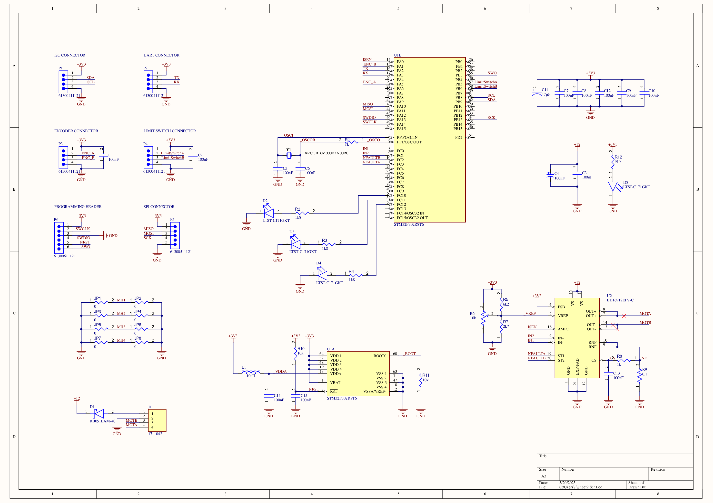

Motor control
Introduction
Rationale
The bonding machine needs to control 4 indipendent axes (X, Y, Z and θ ) with 4 motors as already described in the
mechanical description.
Furthermore, we decided to keep the master control unit (MCU) separate from the motor drivers.
Each driver is a slave board communicates with the MCU through a custom serial protocol
(see system architecture), and each motor is controlled by a separate board.
From demo boards to a custom PCB
The heart of the driver is a STM32F302R876 microcontroller by ST Microelectronics which controls a BD16912EFV-C motor driver IC by ROHM Semiconductor. Each manufacturer offers demo board we could buy and use for our project, but We decided to design our own custom PCB to host the two ICs for the following reason:
- The STM Nucleo demo boards are expensive; the same goes for the BD16912EFV-C demo boards. It was cheaper to buy the individual components and assemble them on a custom PCB, as PCB manufacturing in China is very cheap nowadays (5 small boards cost €5). Shipping is actually more expensive than manufacturing, as fast shipping with a courier costs €20;
- Demo boards are bulky and have a lot of unnecessary headers and components; our boards contain the bare minimum to make the circuit work reliably, reducing the physical size of the drivers. This is important because we want to house all electronics in a small box mounted on the the bonding machine itself;
- Building custom PCBs is an important skill that cannot be taught in ordinary classroom lessons; we figured we could use this opportunity to consolidate our PCB design skills.
Drivers in detail
The schematic and the PCB layout and 3D model can be found in the downloads area of this website.
Schematic
Image gallery
- Top-left: top view of the PCB;
- Top-right: bottom view of the PCB;
- Bottom-left: 3D view of the PCB;
- Bottom-right: assembled PCB.